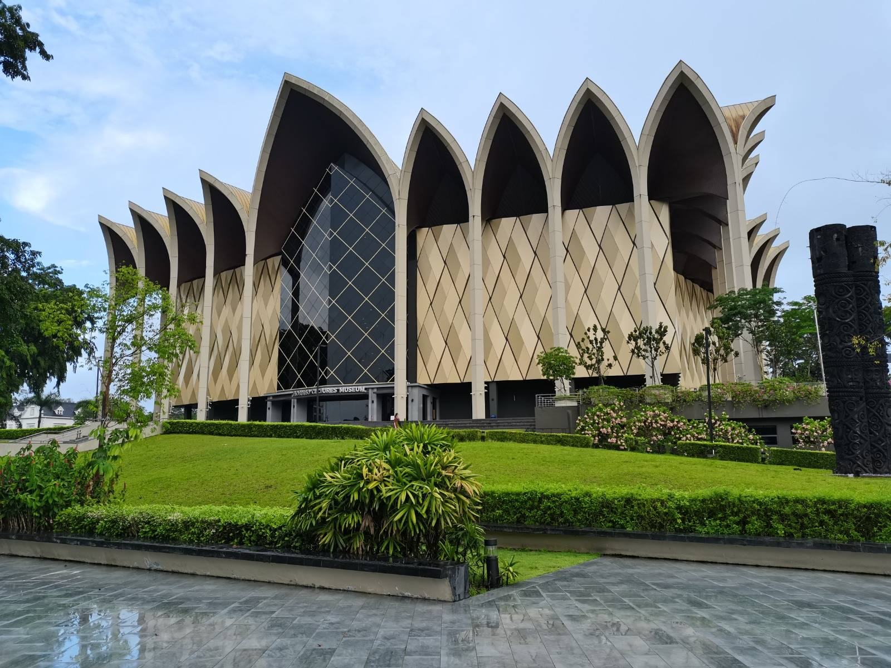
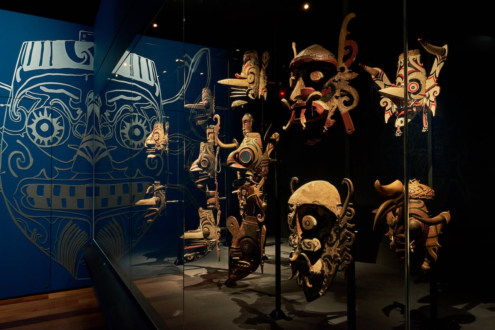
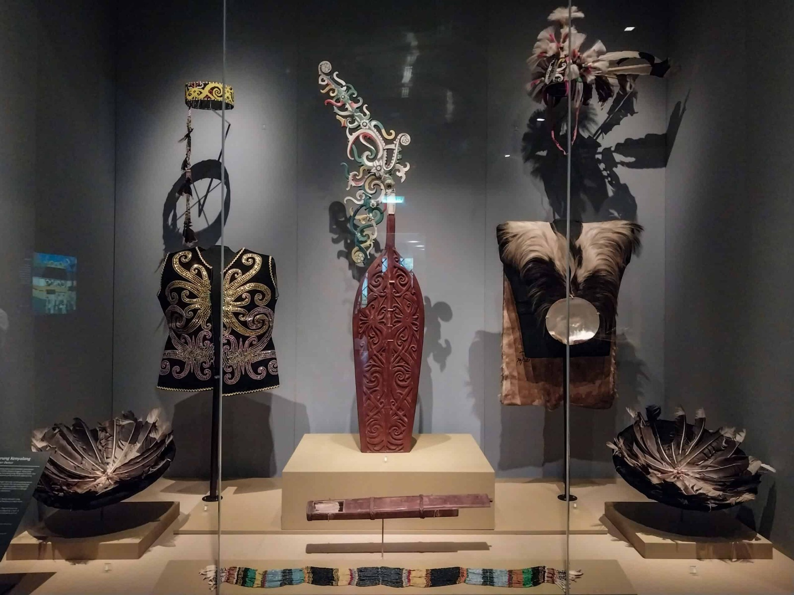

Borneo Cultures Museum
The second-biggest museum in Southeast Asia, the Borneo Cultures Museum is a historic establishment. It is a prominent destination for discovering Borneo's rich natural and cultural history, housed in an eye-catching, contemporary structure with a unique golden roof. The immersive, multi-story layout and cutting-edge interactive multimedia displays that appeal to guests of all ages are often praised by reviewers.
Examples of exhibits in the Borneo Cultures Museum:

